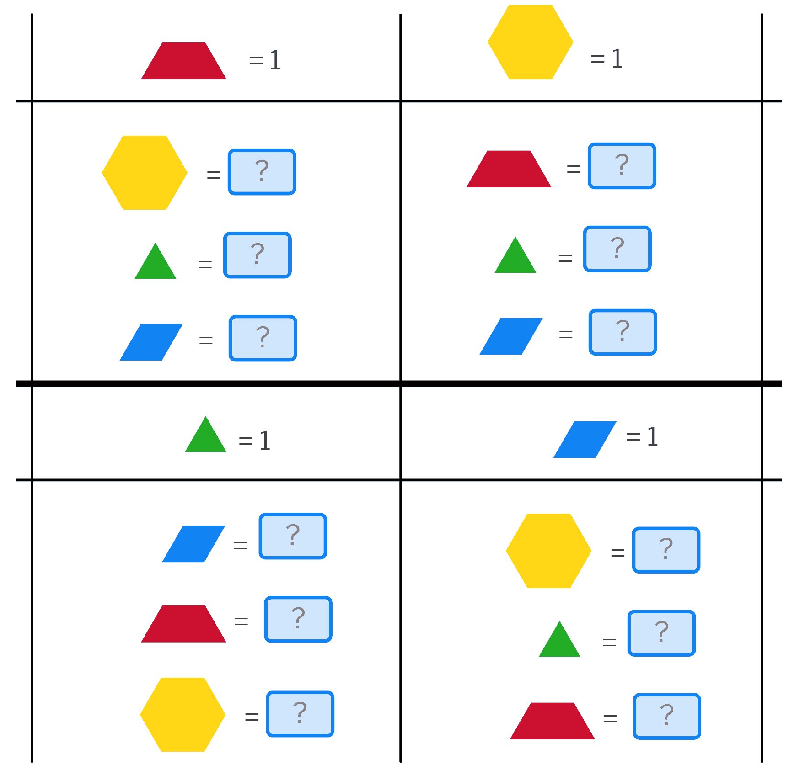

Averiguamos la fracción que representa cada bloque cuando cambiamos la unidad.

Primera parte: el triángulo como unidad
En la primera parte, el triángulo se toma como unidad (1). En este caso, resulta sencillo expresar el valor de las demás piezas, ya que podemos utilizar números enteros.
Segunda parte: el rombo como unidad
En la segunda parte, el rombo se establece como unidad (1). El alumnado puede determinar fácilmente el valor del hexágono. También puede deducir intuitivamente que el triángulo equivale a 1/2 del rombo, ya que es la mitad de su superficie.
Recuerda al alumnado que debe escribir las fracciones en las casillas de respuesta con el formato a/b, sin espacios.
A continuación, pídeles que exploren las distintas formas de expresar el valor del trapecio en función del rombo. Anímales a representar sus razonamientos en el propio canvas, utilizando las piezas geométricas para mostrar cómo han llegado a sus conclusiones.
Tercera parte: el trapecio como unidad
En la tercera parte, el trapecio se establece como unidad (1). El alumnado puede encontrar fácilmente los valores del hexágono y del triángulo.
Dedica algo de tiempo a que exploren cómo determinar el valor del rombo. Existen diferentes estrategias para resolver esta cuestión, por lo que conviene darles libertad para investigar y comparar sus razonamientos.
Cuarta parte: el hexágono como unidad
En la última parte, el hexágono se toma como unidad (1). El alumnado deberá expresar el valor de las demás piezas utilizando fracciones unitarias cuando corresponda.
Esta actividad permite trabajar la equivalencia entre fracciones, la comparación de áreas y la relación entre distintas unidades de medida, favoreciendo que el alumnado desarrolle estrategias propias y represente visualmente sus razonamientos.
Actividad propuesta por Mathigon para trabajar manipulativos virtuales en polypad.
Inicio